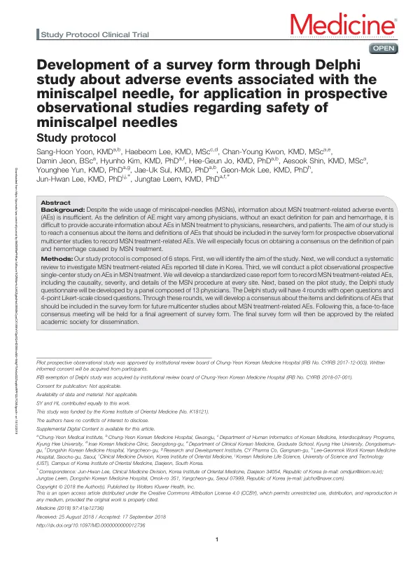

Development of a survey form through Delphi study about adverse events associated with the miniscalpel needle, for application in prospective observational studies regarding safety of miniscalpel needles
Yoon SH, Lee H, Kwon CY, Jeon D, Kim H, Jo HG, Shin A, Yun Y, Sul JU, Lee GM, Lee JH, Leem J
Medicine 97(41):e12736

첫 장 · 오픈액세스First page · open access
논문 소개Summary
앞선 문헌고찰에서 드러난 것은 도침 이상반응 자료가 부실하다는 사실만이 아니었습니다. 연구마다 이상반응을 다르게 정의해 서로 견줄 수 없다는 것이 더 큰 문제였습니다. 도침 뒤에는 통증과 출혈이 흔히 생기므로, 무엇부터 이상반응으로 셀지 정해 두지 않으면 시술자에게도 환자에게도 쓸모 있는 숫자가 나오지 않습니다.
이 논문은 그 정의를 합의로 정하겠다는 계획을 미리 공개한 프로토콜입니다. 결과가 아니라 절차를 밝혀 둔 글입니다. 효과연구 핵심결과지표 지침서 1.0판의 여섯 단계를 따랐습니다. 연구 범위 정하기, 체계적 문헌고찰과 전문가 논의, 단일기관 전향 파일럿 관찰연구, 델파이 연구, 대면 합의회의, 발표와 보급입니다.
델파이는 한의사 13명으로 패널을 꾸려 네 차례 돌리기로 했습니다. 개방형 질문과 4점 리커트 척도의 폐쇄형 질문을 함께 쓰고, 앞 회차에서 정리되지 않은 항목은 다음 회차로 넘깁니다. 이상반응 이름은 규제활동 의학용어집의 영문 용어를 쓰고 중증도는 CTCAE, 인과성은 세계보건기구 웁살라모니터링센터 기준으로 판단하기로 했습니다. 특히 통증과 출혈의 정의에 합의를 얻는 것을 앞세웠습니다.
파일럿 관찰연구는 기관생명윤리위원회 승인을 받아 진행했고 델파이는 심의 면제를 받았습니다. 연구는 임상연구정보서비스에 등록했습니다(KCT0002849). 최종 설문지는 관련 학회의 승인을 거쳐 배포하기로 했습니다.
프로토콜을 따로 발표하는 데는 이유가 있습니다. 합의 과정은 누가 무엇을 어떤 기준으로 정했는지가 결과만큼 중요합니다. 절차를 먼저 공개해 두면 나중에 나온 결론이 사후에 맞춰진 것이 아님을 확인할 수 있습니다. 이 계획은 실제로 그대로 수행되어 도침 이상반응 점검표(ACUPOCHECK)로 이어졌습니다.
What the preceding systematic review exposed was not only that data on acupotomy-related adverse events were thin. The larger problem was that every study defined an adverse event differently, so none could be compared with another. Pain and bleeding are common after the procedure, and unless it is settled in advance what counts, no number useful to practitioner or patient will come out.
This paper is a protocol: the plan to settle those definitions by consensus, published in advance. It sets out procedure rather than results. It follows the six steps of version 1.0 of the Core Outcome Measures in Effectiveness Trials handbook — identify the scope, systematic literature review with expert discussion, single-centre prospective pilot observational study, Delphi study, face-to-face consensus meeting, and publication and dissemination.
The Delphi was to run four rounds with a panel of 13 Korean medicine doctors, combining open questions with closed questions on a 4-point Likert scale, carrying items unresolved in one round into the next. Adverse events were to be named using the English terms of the Medical Dictionary for Regulatory Activities, severity graded by CTCAE and causality assessed by the World Health Organization–Uppsala Monitoring Centre system. Reaching consensus on the definitions of pain and haemorrhage was put first.
The pilot observational study was approved by an institutional review board, and the Delphi study received an exemption. The work was registered with the Clinical Research Information Service (KCT0002849). The final survey form was to be approved by the relevant academic society before dissemination.
There is a reason to publish a protocol separately. In a consensus exercise, who decided what and by which criteria matters as much as the outcome. Making the procedure public first lets a later conclusion be checked as something other than a post hoc fit. This plan was carried through as written, and became the acupotomy-related adverse event checklist (ACUPOCHECK).
인용Cite
Yoon SH, Lee H, Kwon CY, Jeon D, Kim H, Jo HG, Shin A, Yun Y, Sul JU, Lee GM, Lee JH, Leem J. Development of a survey form through Delphi study about adverse events associated with the miniscalpel needle, for application in prospective observational studies regarding safety of miniscalpel needles. Medicine. 2018;97(41):e12736. doi:10.1097/MD.0000000000012736